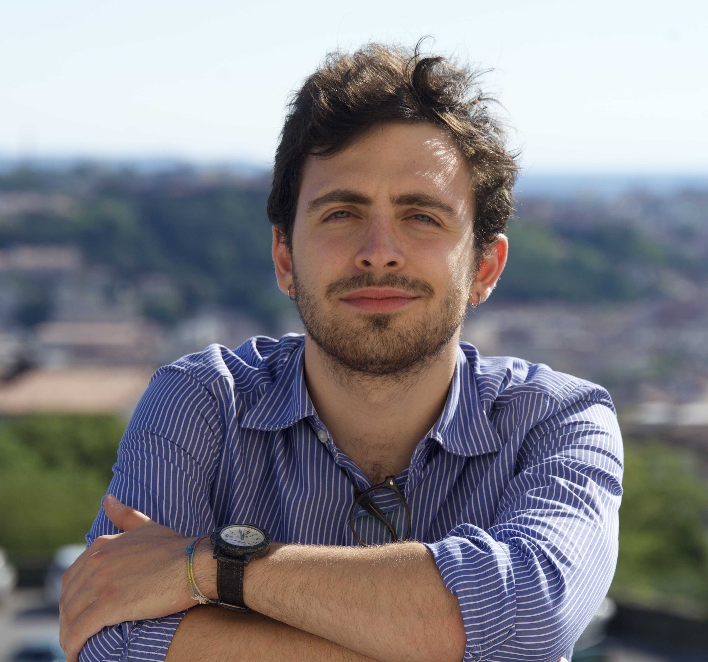

Davide Donati
Ph.D. student in Mathematical Analysis
SISSA, Trieste
I am a Ph.D. student in Mathematical Analysis at SISSA in Trieste, under the supervision of Prof. Andrea Braides and Prof. Gianni Dal Maso. I have been mostly interested in problems arising from the calculus of variations and, in particular, to questions related to Γ-convergence, free discontinuity functionals, fine properties of functions of bounded variation and bounded deformation, and singular perturbation models for phase transitions.
To contact me, write to ddonati@sissa.it.
Research interests Γ-convergence · free-discontinuity problems · homogenisation · functions of bounded variation and deformation · phase transitions

Publications
Last update: August 2026 — reverse chronological order.
Published papers
-
Singular perturbations models in phase transitions for anisotropic higher-order materials
Calc. Var. Partial Differential Equations 64 (2025), Paper No. 243.
-
Homogenization of vectorial free-discontinuity functionals with cohesive type surface terms
Proc. Roy. Soc. Edinburgh Sect. A, published online 2025.
-
Higher-order singular perturbation models for phase transitions
SIAM J. Math. Anal. 57(3) (2025).
-
A new space of generalised vector-valued functions of bounded variation
NoDEA Nonlinear Differential Equations Appl. 32 (2025), Paper No. 59.
-
Another look at elliptic homogenization
Milan J. Math. 92 (2024), Paper No. 1.
-
Γ-convergence of quadratic functionals perturbed by bounded linear functionals
Nonlinear Anal. 238 (2024), Paper No. 113395.
Preprints
-
A remark on the Korn–Poincaré–Sobolev inequality for functions of generalised bounded deformation
Submitted, 2026.
-
Γ-convergence of convolution-type functionals for free discontinuity problems
Preprint, 2026.
-
Γ-convergence and homogenisation for free discontinuity functionals with linear growth in the space of functions with bounded deformation
Preprint, 2026.
-
A matrix-valued measure associated to the derivatives of a function of generalised bounded deformation
Preprint, 2025.
Talks and conferences
Invited talks
-
Homogenization of vectorial free-discontinuity functionals with cohesive type surface terms
AIMS Conference, Athens — special session Defects, Microstructures, and Failure: Multiscale Variational Models, 8 July 2026.
-
Higher-order singular perturbation models for phase transitions
Universität Wien, 24 April 2026.
-
A matrix-valued measure associated to the derivatives of a function of generalised bounded deformation
Hausdorff Center for Mathematics, Bonn, 20 November 2025.
-
A matrix-valued measure associated to the derivatives of a function of generalised bounded deformation
Calculus of Variations at the Orangery, FAU Erlangen, 29 October 2025.
-
A matrix-valued measure associated to the derivatives of a function of generalised bounded deformation
Analysis Junior Seminar, SISSA, 17 October 2025.
-
Higher-order singular perturbation models for phase transitions
Università degli Studi di Napoli Federico II, 4 November 2024.
-
Another look at elliptic homogenization
Analysis Junior Seminar, SISSA, 18 November 2023.
Contributed talks
-
A matrix-valued measure associated to the derivatives of a function of generalised bounded deformation
XXXV Convegno Nazionale di Calcolo delle Variazioni, Riccione, 10 February 2026.
-
A matrix-valued measure associated to the derivatives of a function of generalised bounded deformation
Calculus of Variations and Applications, CIRM, Marseille, 15 January 2026.
Poster presentations
-
A matrix-valued measure associated to the derivatives of a function of generalised bounded deformation
Geometric Methods in Calculus of Variations, Pisa, 8 July 2025.
-
Homogenization of vectorial free-discontinuity functionals with cohesive type surface terms
Mathematical Analysis and Applications, Como, 12 June 2025.
-
Another look at elliptic homogenization
Calculus of Variations and Nonlinear Analysis in the Applied Sciences, Rome, 6 June 2024.
Teaching
-
Meccanica Analitica — tutoring (50 hours)
Dipartimento di Matematica e Geoscienze, Università degli Studi di Trieste.
Education
-
Ph.D. in Mathematical Analysis, SISSA, Trieste
- Advisors: Prof. Andrea Braides and Prof. Gianni Dal Maso.
- Three-month visiting period at JKU Universität Linz, in the group of Prof. Manuel Friedrich.
-
M.Sc. in Mathematics, Università degli Studi di Trieste
- Advisor: Prof. Gianni Dal Maso.
- Final grade: 110/110 cum laude.
-
B.Sc. in Mathematics, Università degli Studi di Roma La Sapienza
- Advisor: Prof. Adriana Garroni.
- Final grade: 110/110.
- Erasmus semester at Aix-Marseille Université, with courses in French on functional analysis, measure theory, probability and advanced algebra.
Awards and activities
Honors and awards
-
Two-year merit-based scholarship
Granted by SISSA, after a competitive selection, to students of the master programme in mathematics of the University of Trieste.
-
Diploma of the “Percorso Formativo Comune”
Awarded on completion of an excellence programme introducing master students in mathematics of the University of Trieste to research.
Organisation
-
Junior Math Days 2025
Organiser, with L. Cortelli, C. Trifone and M. Zanardini. A three-day conference at SISSA for master students considering a career in research, 1–3 December 2025.
-
Junior Math Days 2024
Organiser, with V. Bais, A. Rosana, C. Trifone, E. Vitale and S. Vincini. A three-day conference at SISSA for master students considering a career in research, 2–4 December 2024.
-
Analysis Junior Seminars, SISSA
Organiser of the 2024 cycle, with G. C. Brusca, A. Ivagnes, M. Khamlich, M. T. Rotolo and P. Siena.